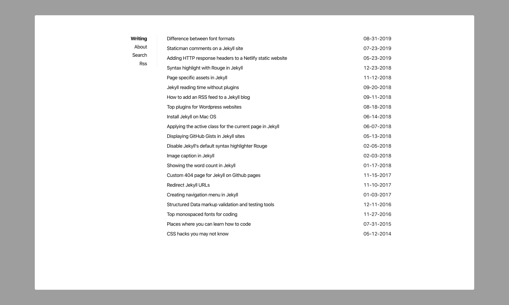

About
Sidey is a simple and minimalistic jekyll blogging theme.
Features
- Responsive design
- Inline CSS
- Anchor headings
- Search
- Tags & tag pages
- Security headers (for Netlify hosting)
- 404 page
- Compressed CSS and HTML
- 100/100 score on Lighthouse, Page Speed Insights & Webpagetest
- Robots.txt
- Atom & Json feeds
- Sass
- Seo optimized (Twitter cards, Facebook Open Graph, Schema.org)
- Ultra fast (Only ~5kb of CSS)
- Sidebar navigation
Screenshot
